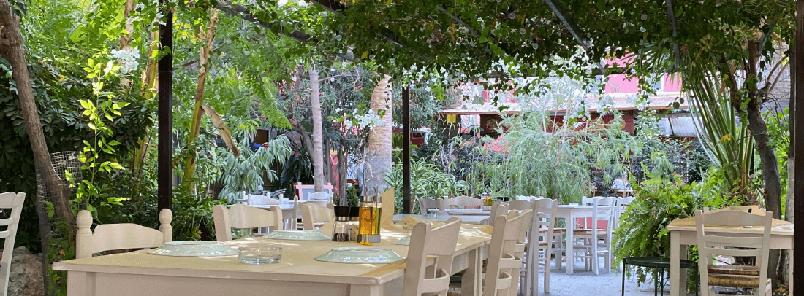
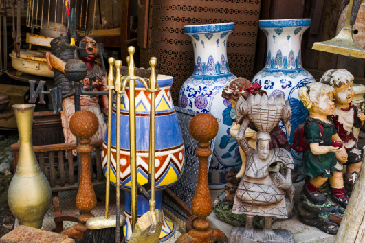
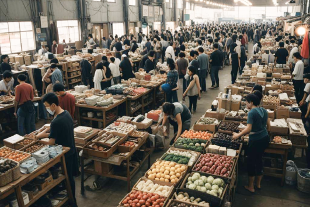
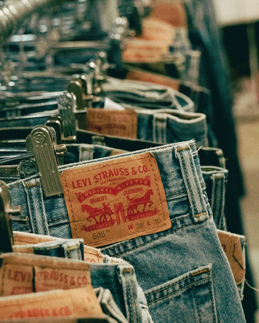

美食與自然的完美結合
坐落在山中的山巒餐廳，提供無與倫比的用餐體驗，從新鮮的食材到優美的環境，每一個細節都經過精心設計，帶來最純粹的享受。

556

美食與自然的完美結合
坐落在山中的山巒餐廳，提供無與倫比的用餐體驗，從新鮮的食材到優美的環境，每一個細節都經過精心設計，帶來最純粹的享受。 隱秘於山間的山巒餐廳，以天然食材與迷人景色為特色，無論是美味的料理還是放鬆的環境，都讓您流連忘返。 遠離城市喧囂，來到山巒餐廳。這裡的每道料理都散發著自然的香氣，在清新空氣中細細品味，您將會愛上這裡的獨特魅力。


這個週末我們將在熱鬧的市中心舉辦一場別開生面的二手市集，讓您在享受購物樂趣的同時，也能體驗到環保與時尚的結合。無論您是尋找獨特的復古服飾、稀有的收藏品，還是實惠的家居用品，我們的市集都能滿足您的需求！
市集亮點包括：
✨ 來自全國各地的獨立攤販，帶來他們精選的二手寶藏。
✨ 現場還有DIY手作工坊，教您如何改造舊物，賦予它們新的生命。
✨ 特設兒童角，讓孩子們也能參與環保教育活動，享受歡樂時光。
✨ 現場音樂表演與美食區，讓您在購物之餘還能享受美妙的音樂和美食。

不僅如此，我們還特別邀請了幾位環保達人來分享他們的綠色生活小技巧，幫助大家在日常生活中實踐環保理念。參與市集的每位顧客還將有機會參加抽獎活動，贏取豐富獎品！
參加我們的二手市集，不僅可以找到物美價廉的寶貝，還能為環保出一份力，減少浪費，共同創造一個更可持續的未來。立即標註您的親朋好友，約定這個週末一起來市中心廣場，享受這場不容錯過的二手市集盛會！期待在市集上見到您！💚